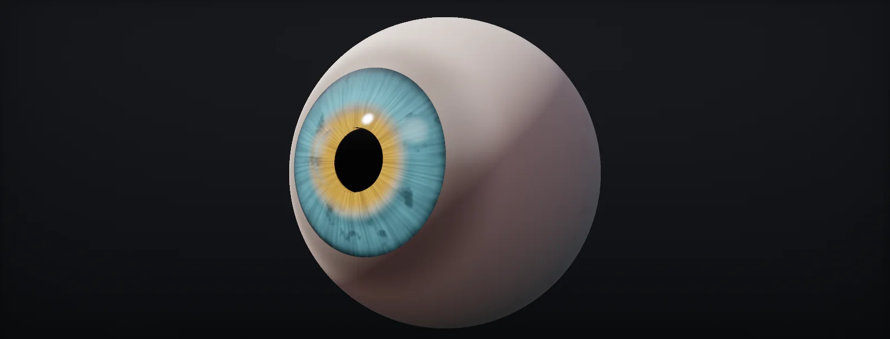

Eye Shading
Eye anatomy in shader terms, then five tiers of eye shader from the cheapest to a raymarched iris: a painted sphere, a parallax offset, two meshes with refraction, HDRP's iris-plane refraction, and an analytic iris marched with one texture fetch, plus tinting, mesh conventions and cost, built in Unity HDRP and Unreal.

Eye anatomy for shading
An eye is a white ball (the ) with a clear dome on the front (the ). The ring where they meet is the limbus. Behind the cornea is a few millimetres of clear fluid, the anterior chamber, and at its back the , a muscle disc with a hole, the pupil, through which the lens shows black.
The two numbers that decide the look are how far the cornea bulges and how deep the iris sits behind it. Typical adult values are a cornea radius near 7.8 mm, a visible iris about 11.5–12 mm wide, and an anterior chamber around 2.5–3.5 mm deep:
Everything that makes eyes read as real follows from this geometry: the iris sits several millimetres behind a glossy, refracting surface. It moves against the highlight when the head turns, the pupil stays round from the side, the iris disappears behind the limbus at grazing angles, and light focuses on the far side of the iris (the caustic). Each of the five shader tiers below captures more of it.
Tier 0: painted iris
The cheapest eye is a sphere with the iris painted on it, a glossy material and maybe a painted highlight. Head-on and at a distance it is fine. Turn the head and the illusion breaks, because the painted iris sits on the surface instead of under it. The real iris shifts by this much:
A few tricks stretch tier 0: a separate highlight on a slightly larger transparent sphere (so it moves with the camera, not the iris), a matcap for the reflection (matcaps), and an ambient occlusion shadow from the eyelids painted or computed at the top of the eye. Painted highlights are the one thing to avoid: they stay put when the light moves.
Tier 1: parallax offset
One instruction block fixes most of tier 0: shift the iris UVs against the view direction, as if the iris were a layer under the surface.
The plain offset uses tan θ, which explodes towards grazing angles. Refraction bends the view ray towards the axis on entering the cornea, so the real shift grows much more slowly. Dividing the offset by the IOR is a cheap middle ground:
Clamp the offset (or fade it towards the limbus) and tier 1 holds up to about 30° off axis, which covers most gameplay cameras. It still treats the iris as a flat sticker and the cornea as flat glass: the pupil turns oval at angles, and the iris never disappears behind the limbus.
Tier 2: separate cornea mesh
The physical setup models what is there: an opaque eyeball with a real, recessed iris (a disc or slight cone of geometry, the pupil a hole or a dark texture), plus a separate transparent cornea shell over it. The shell refracts what is behind it like any glass, so depth, parallax and the oval-from-the-side look come for free, and the iris can even have real geometry for the collarette.
The costs are of a different kind:
- Two draws per eye, one of them transparent, with the usual sorting concerns against eyelashes and the tear line.
- Screen-space refraction needs a copy of the screen (the colour pyramid). If nothing else in the scene refracts, the eyes alone trigger that full-screen work.
- Refracted reflections and depth of field interact badly with transparent shells in some pipelines.
Offline renderers and some cinematic setups use it. In real-time engines, the single-mesh approaches below are usually cheaper overall because all their work stays inside the eye's own pixels.
Tier 3: iris plane refraction
HDRP's Eye shader keeps one closed mesh (sclera plus cornea bulge) and computes the iris instead of modelling it. For each cornea pixel, the view ray is refracted at the cornea normal and intersected with a flat plane at the iris depth; the hit point becomes the iris UV:
In Shader Graph that is a short chain of HDRP eye nodes: Cornea Refraction (refract and intersect the plane), Iris UV Location (plane position to UV), Circle Pupil Animation (dilation), Iris Offset (off-centre pupils), and Sclera UV Location for the white. The Eye master stack then lights cornea and iris separately (iris normal, two diffusion profiles), and Eye Cinematic With Caustic adds the light focused through the cornea onto the far side of the iris.
The limitation is the word plane. A real iris is a shallow cone, pushed forward at the pupil by the lens and recessed at the root; on a plane the pupil smears into an oval at angles and the iris lacks the depth gradient. Many setups compensate by raising the IOR far above the physical 1.336 (values of 3 or more appear in sample materials), which magnifies and flattens the parallax instead of fixing it.
Tier 4: iris height profile
The step beyond the plane is to give the iris a shape and find where the refracted ray meets it. The shape does not need a texture: three features carry most of the visible depth, and each is a short formula:
- A cone rising from the recessed root to the pupil margin, which the lens pushes forward. A smoothstep gives it zero slope at both ends, so it blends into the root and the pupil plateau without creases.
- The collarette, a soft ridge about a third of the way out from the pupil: a Gaussian bump.
- The pupil region is the hole; the profile is evaluated in the same radius space as the pupil animation so the shape dilates with the texture.
Because the profile is always between 0 and cone + ridge, the surface is guaranteed to lie in a thin slab above the iris root, exactly the bound a height-field march needs. Fine detail (crypts, fibres) stays in a texture and is added once at the end.
Iris ray march
The march is the fast POM recipe in the eye's object space:
- Refract at the cornea, as in tier 3.
- Early out: if the refracted ray points away from the iris or lands well outside it on the base plane, return the plane result. The sclera and the outer cornea pay almost nothing.
- Bound: start where the ray enters the slab (top of the profile), end at the iris root.
- Adaptive linear steps through the slab, 4 when looking straight in and up to 8 at grazing angles, each one an evaluation of the formula, no texture.
- Two secant steps between the last point above and the first below.
- One detail fetch at the hit: the height texture pushes the hit a little further along the ray (dark = deeper). Skipped entirely when the detail depth is 0.
Two details from building it. The gradients for the one texture fetch are taken from the smooth plane hit before any branch, because inside the loop neighbouring pixels stop at different steps and derivatives become meaningless (gradients). And the iris normal comes from the slope of the profile at the hit, expressed in the cornea's tangent frame, which is what HDRP's Iris Normal input expects; the stock setup lights the iris as if it bulged outward like the cornea.
An earlier version marched the iris height texture directly with 9–18 fetches per pixel. The analytic profile gives the depth you notice for none of them; the crypts were never worth 18 dependent reads.
Iris tint
Iris colour is a property players and character artists want to change. The robust setup is the grey tint mask: the iris texture holds structure only (fibres, crypts, the limbal ring), centred on 50 % grey, and a colour property supplies the hue and brightness. 50 % grey in the texture shows exactly the picked colour.
Then the colour is clamped to what irises can be: luminance between about 0.006 (darkest brown) and 0.32 (lightest grey-blue), and a saturation cap that is higher for dark colours (0.88) than for light ones (0.55), applied in a way that keeps hue and luminance. A pure neon green pick becomes a light jade, pure blue a deep blue-grey, black a very dark brown. Nothing in it depends on a script or a calibration step; it is all in the material.
Two related settings: the Iris Clamp Color of HDRP's eye (shown where a grazing ray misses the iris) should follow the tint, and heterochromia is a per-eye tint, easiest with a second material or an eye ID in a vertex channel.
Mesh conventions
Single-mesh eye shaders work in the eye mesh's object space, so the mesh has to follow their conventions:
- One closed mesh per eye: sclera sphere plus a cornea cap, no iris geometry, a clean edge loop at the limbus.
- Smooth, dense normals on the cornea; its normal is the refraction normal, so faceting there turns into a wobbling iris.
- The gaze along the axis the shader expects (+Z in HDRP's eye), the limbus near z = 0, a known iris radius in mesh units (0.22 after the graph's Mesh Scale in HDRP's setup), uniform scale.
- Tangents imported, because the iris normal is built in the cornea's tangent frame.
- Eyes as separate objects parented to eye bones, so gaze is a transform. Eyes merged into a skinned head break the object-space assumptions.
If eyes must stay merged into the head, an import step can bake each eye's frame (centre, gaze axis, limbus) into extra UV channels, fitted per connected component, and the shader reads the frame from the vertex instead of object space. That makes the shader independent of pivots and joins at the cost of a custom importer.
Cost per tier
Eye cost scales with how much of the screen the irises cover, and in a close-up that is still small compared with full-screen effects:
| Tier | Meshes and draws | Per-pixel work | Full-screen work | Looks right | Use for |
|---|---|---|---|---|---|
| 0 Painted sphere | 1 opaque | a texture read | none | head-on, at a distance | crowds, mobile, stylised |
| 1 Parallax offset | 1 opaque | + a few instructions | none | up to ~30° off axis | most game characters |
| 2 Two meshes | eyeball opaque + cornea transparent | refraction lookup | a screen copy (if nothing else needs one) | all angles, real iris geometry | offline-like setups, VR with care |
| 3 Iris plane (HDRP Eye) | 1 opaque | refraction + plane hit + eye lighting | none | most angles; flat iris | hero characters |
| 4 Raymarched iris | 1 opaque | tier 3 + 4–8 ALU steps + 0–1 fetch | none | all angles, recessed pupil, shaped iris | close-ups, cinematics |
Mix tiers by distance: tier 4 for the hero in close-ups and cinematics, tier 3 or 1 for the same character in gameplay, tier 0 for crowds. Switch with material LODs or a quality setting rather than shader branches, so each version stays simple.
Build it in Unity HDRP
This is the setup built for the realistic eye: HDRP's Eye shader graph with its flat iris-plane refraction replaced by the raymarched iris, plus the clamped tint. Everything stays in the eye's pixels: one mesh, one draw, one optional extra texture fetch. Written for Unity 6 with HDRP 17; Unity 2022 LTS works the same apart from a few renamed menu entries.
- Start from HDRP's eye: Window > Package Management > Package Manager, High Definition RP, Samples > Material Samples > Import. Open the Eye scene, drag an Eye Variant prefab into your scene and press Fix on the material's Sclera and Iris Diffusion Profiles if the eye looks green. Duplicate the sample eye shader graph into
Assets/EyeFPOM/Eye_FPOM.shadergraphand point a material copy at it. - Check the mesh against the graph's conventions (the mesh chapter): gaze along +Z in object space, limbus at z ≈ 0, iris radius 0.22 in mesh-scaled units (set the graph's Mesh Scale property if your eye is a different size), smooth normals over the cornea, tangents imported, uniform scale.
- Put
EyeIrisRaymarch.hlslandIrisCombine.hlslintoAssets/EyeFPOM/. In the graph, find the Cornea Refraction node and the mesh-scaled object position that feeds it. - Add the material properties:
RM Cornea IOR1.336,RM Iris Depth0.06,RM Iris Cone Height0.02,RM Collarette Height0.004,RM Iris Detail Depth0.008,RM Min Steps4,RM Max Steps8,RM Shape Normal Strength1,RM Cavity Strength0.5, a Texture2DRM Iris Height Map, and a ColorIris Tint. - In the graph, add a Custom Function node. Set Type to
File, Source toEyeIrisRaymarch.hlsland Name toIrisRaymarch(without the_floatsuffix). Add the inputs PositionOS (Vector 3, the mesh-scaled position), ViewDirOS (Vector 3), CorneaNormalOS (Vector 3), TangentOS (Vector 3), BitangentOS (Vector 3), CorneaIOR, IrisDepth, IrisRadius, PupilRadius, PupilAperture, MinPupilAperture, MaxPupilAperture (Floats), IrisUVOffset (Vector 2), HeightMap (Texture2D), ConeHeight, CollaretteHeight, DetailDepth, MinSteps, MaxSteps, ShapeNormalStrength, CavityStrength (Floats) and the outputs RefractedPositionOS (Vector 3), IrisShapeNormalTS (Vector 3), Cavity (Float), in that order and with those types: they must match the function's parameters. View direction, normal, tangent and bitangent nodes in Object space. Pupil values come from the graph's existing pupil properties so the profile follows the pupil animation. - Rewire: connect RefractedPositionOS where the Cornea Refraction output went (into Iris UV Location). The stock node can stay; with nothing connected it is stripped at compile time. The iris colour, normal map and pupil animation are now sampled at the marched position.
- In the graph, add a Custom Function node. Set Type to
File, Source toIrisCombine.hlsland Name toIrisCombine(without the_floatsuffix). Add the inputs ShapeNormalTS (Vector 3), DetailNormalTS (Vector 3), IrisColor (Vector 3), Tint (Vector 3), Cavity (Float) and the outputs NormalTS (Vector 3), Color (Vector 3), in that order and with those types: they must match the function's parameters. DetailNormalTS is the sampled iris normal map, IrisColor the sampled iris texture. Connect NormalTS to the Iris Normal path and Color to the iris colour path of the graph. - Keep the physics consistent: drive the master stack's IOR block with RM Cornea IOR and the Iris Plane Offset block with RM Iris Depth, so Fresnel and caustics match the march. Set Iris Clamp Color close to the tint: it shows where a grazing ray misses the iris.
- Material Type:
Eyefor games,Eye Cinematicfor better lighting,Eye Cinematic With Causticfor the caustic on the iris. Author the iris texture as a grey tint mask (mean 128 sRGB) and pick any colour in Iris Tint. - Verify: look at the eye from 0°, 30° and 60°. The pupil should stay round and recessed, the iris should slide behind the cornea, and setting RM Iris Detail Depth to 0 should change only fine detail (that is the zero-fetch version).
#ifndef EYE_IRIS_RAYMARCH_INCLUDED
#define EYE_IRIS_RAYMARCH_INCLUDED
// -----------------------------------------------------------------------------
// Iris raymarch for the HDRP Eye shader (single mesh), low-cost version.
// 1. physical refraction at the cornea
// 2. ALU-only adaptive march (+2 secant steps) against an analytic iris profile
// (recessed root, pupil margin pushed forward by the lens, collarette ridge)
// 3. one height fetch at the hit for crypt detail, as a single parallax step;
// skipped when Detail Depth is 0
// Extra texture fetches compared with the stock HDRP eye: 1 (or 0).
// Space: the Eye graph's mesh-scaled object space (limbus z ~ 0, iris radius 0.22).
// -----------------------------------------------------------------------------
float EyeRM_PupilAnimRadius(float r, float pupilRadius, float aperture, float minAp, float maxAp)
{
float newPupil = aperture > 0.5 ? lerp(pupilRadius, maxAp, (aperture - 0.5) * 2.0)
: lerp(minAp, pupilRadius, aperture * 2.0);
return r < newPupil ? (pupilRadius / max(newPupil, 1e-4)) * r
: 1.0 - ((1.0 - pupilRadius) / max(1.0 - newPupil, 1e-4)) * (1.0 - r);
}
float EyeRM_Shape(float ra, float pupilRadius, float coneHeight, float collaretteHeight)
{
float s = saturate((1.0 - ra) / max(1.0 - pupilRadius, 1e-3)); // 0 root .. 1 pupil margin
float cone = coneHeight * s * s * (3.0 - 2.0 * s);
float d = (ra - lerp(pupilRadius, 1.0, 0.35)) * 12.0;
return cone + collaretteHeight * exp(-d * d);
}
float EyeRM_ShapeAt(float2 xy, float irisRadius, float pupilRadius, float aperture, float minAp, float maxAp,
float coneHeight, float collaretteHeight)
{
float ra = EyeRM_PupilAnimRadius(length(xy) / irisRadius, pupilRadius, aperture, minAp, maxAp);
return EyeRM_Shape(ra, pupilRadius, coneHeight, collaretteHeight);
}
void IrisRaymarch_float(
float3 PositionOS, float3 ViewDirOS, float3 CorneaNormalOS, float3 TangentOS, float3 BitangentOS,
float CorneaIOR, float IrisDepth, float IrisRadius,
float PupilRadius, float PupilAperture, float MinPupilAperture, float MaxPupilAperture, float2 IrisUVOffset,
UnityTexture2D HeightMap,
float ConeHeight, float CollaretteHeight, float DetailDepth,
float MinSteps, float MaxSteps, float ShapeNormalStrength, float CavityStrength,
out float3 RefractedPositionOS, out float3 IrisShapeNormalTS, out float Cavity)
{
float3 N = normalize(CorneaNormalOS);
float3 V = -normalize(ViewDirOS);
float3 D = refract(V, N, 1.0 / max(CorneaIOR, 1.0001));
float zBase = -IrisDepth;
float dz = min(D.z, -1e-4);
float tPlane = (zBase - PositionOS.z) / dz;
float2 xyPlane = PositionOS.xy + D.xy * tPlane;
// gradients for the single detail fetch, taken before any divergent branch
float2 uvPlane = xyPlane / IrisRadius * 0.5 + 0.5;
float2 dUVdx = ddx(uvPlane);
float2 dUVdy = ddy(uvPlane);
RefractedPositionOS = float3(D.z < 0.0 ? xyPlane : float2(1.5, 1.5), 0.0);
IrisShapeNormalTS = float3(0.0, 0.0, 1.0);
Cavity = 1.0;
// early out: ray points away, or lands well outside the iris (sclera and outer cornea stop here)
if (D.z >= -1e-4 || dot(xyPlane, xyPlane) > IrisRadius * IrisRadius * 1.3225)
return;
// ALU-only march through the slab [base, base + cone + collarette]
float tTop = max((zBase + ConeHeight + CollaretteHeight - PositionOS.z) / D.z, 0.0);
float tBot = tPlane;
int steps = (int)max(round(lerp(MaxSteps, MinSteps, saturate(-D.z))), 1.0);
float dt = (tBot - tTop) / (float)steps;
float3 p = PositionOS + D * tTop;
float tPrev = tTop;
float dPrev = p.z - (zBase + EyeRM_ShapeAt(p.xy, IrisRadius, PupilRadius, PupilAperture, MinPupilAperture, MaxPupilAperture, ConeHeight, CollaretteHeight));
float tCur = tBot;
float dCur = -1e-5;
[loop]
for (int i = 1; i <= steps; i++)
{
float t = tTop + dt * i;
p = PositionOS + D * t;
float d = p.z - (zBase + EyeRM_ShapeAt(p.xy, IrisRadius, PupilRadius, PupilAperture, MinPupilAperture, MaxPupilAperture, ConeHeight, CollaretteHeight));
if (d <= 0.0) { tCur = t; dCur = d; break; }
tPrev = t; dPrev = d;
}
[unroll]
for (int k = 0; k < 2; k++)
{
float tm = lerp(tPrev, tCur, dPrev / max(dPrev - dCur, 1e-7));
p = PositionOS + D * tm;
float dm = p.z - (zBase + EyeRM_ShapeAt(p.xy, IrisRadius, PupilRadius, PupilAperture, MinPupilAperture, MaxPupilAperture, ConeHeight, CollaretteHeight));
if (dm > 0.0) { tPrev = tm; dPrev = dm; } else { tCur = tm; dCur = dm; }
}
float tHit = lerp(tPrev, tCur, dPrev / max(dPrev - dCur, 1e-7));
float3 hit = PositionOS + D * tHit;
// detail: one fetch, one parallax-offset step along the refracted ray
float lum = 1.0;
[branch]
if (DetailDepth > 0.0)
{
float2 c = hit.xy / IrisRadius;
float r = max(length(c), 1e-5);
float ra = EyeRM_PupilAnimRadius(r, PupilRadius, PupilAperture, MinPupilAperture, MaxPupilAperture);
float2 uv = (c / r * ra) * 0.5 + 0.5 + IrisUVOffset;
float3 s = SAMPLE_TEXTURE2D_GRAD(HeightMap.tex, HeightMap.samplerstate, uv, dUVdx, dUVdy).rgb;
lum = dot(s, float3(0.2126, 0.7152, 0.0722));
hit += D * (DetailDepth * (lum - 1.0) / D.z); // dark = deeper
}
RefractedPositionOS = float3(hit.xy, 0.0);
// macro normal from the analytic profile (ALU only), expressed in the cornea's tangent frame
float e = IrisRadius * 0.01;
float hx = EyeRM_ShapeAt(hit.xy + float2(e, 0), IrisRadius, PupilRadius, PupilAperture, MinPupilAperture, MaxPupilAperture, ConeHeight, CollaretteHeight)
- EyeRM_ShapeAt(hit.xy - float2(e, 0), IrisRadius, PupilRadius, PupilAperture, MinPupilAperture, MaxPupilAperture, ConeHeight, CollaretteHeight);
float hy = EyeRM_ShapeAt(hit.xy + float2(0, e), IrisRadius, PupilRadius, PupilAperture, MinPupilAperture, MaxPupilAperture, ConeHeight, CollaretteHeight)
- EyeRM_ShapeAt(hit.xy - float2(0, e), IrisRadius, PupilRadius, PupilAperture, MinPupilAperture, MaxPupilAperture, ConeHeight, CollaretteHeight);
float3 nOS = normalize(float3(-hx * ShapeNormalStrength, -hy * ShapeNormalStrength, 2.0 * e));
IrisShapeNormalTS = normalize(float3(dot(nOS, normalize(TangentOS)), dot(nOS, normalize(BitangentOS)), dot(nOS, N)));
// cavity: crypt darkening from the same fetch + iris-root occlusion
float root = 1.0 - 0.6 * smoothstep(0.82, 1.0, length(hit.xy) / IrisRadius);
Cavity = lerp(1.0, lerp(0.4, 1.0, lum) * root, CavityStrength);
}
#endif#ifndef EYE_IRIS_COMBINE_INCLUDED
#define EYE_IRIS_COMBINE_INCLUDED
// Iris normal (macro shape + normal map, reoriented normal mapping) and the clamped tint.
// IrisColor: the iris texture sampled at the marched UV, authored as a grey tint mask (mean 128 sRGB).
void IrisCombine_float(float3 ShapeNormalTS, float3 DetailNormalTS, float3 IrisColor, float3 Tint, float Cavity,
out float3 NormalTS, out float3 Color)
{
float3 t = ShapeNormalTS + float3(0.0, 0.0, 1.0);
float3 u = DetailNormalTS * float3(-1.0, -1.0, 1.0);
NormalTS = normalize(t * dot(t, u) / t.z - u);
// ---- iris tint, limited to plausible iris colours (linear space) ----
const float3 L = float3(0.2126, 0.7152, 0.0722);
const float LUM_MIN = 0.006; // ~ darkest brown irises
const float LUM_MAX = 0.32; // ~ lightest grey-blue irises
const float SAT_DARK = 0.88; // linear HSV saturation cap for dark irises
const float SAT_LIGHT = 0.55; // ... for the lightest irises
float y = clamp(dot(Tint, L), LUM_MIN, LUM_MAX);
float3 c = Tint / max(dot(Tint, L), 1e-6); // hue at luminance 1
float mx = max(c.r, max(c.g, c.b));
float mn = min(c.r, min(c.g, c.b));
float sat = (mx - mn) / max(mx, 1e-6);
float satMax = lerp(SAT_DARK, SAT_LIGHT, smoothstep(0.03, 0.30, y));
float k = sat > satMax ? satMax / ((mx - mn) - satMax * (mx - 1.0)) : 1.0;
c = lerp(1.0, c, k); // towards grey, keeps hue and luminance
float3 tint = c * y;
// ---- texture = tint mask: 50 % sRGB grey (0.214 linear) shows exactly the tint ----
float detail = dot(IrisColor, L) / 0.214;
Color = saturate(tint * detail) * Cavity;
}
#endifCost: about 4–8 profile evaluations plus 2 secant steps and 4 for the normal, roughly 300 instructions at worst, on iris pixels only. Sclera and outer cornea leave at the early out. The next optimisation would be an analytic derivative of the profile instead of the four extra evaluations for the normal.
Build it in Unreal Engine
Unreal has an Eye shading model with two extra inputs, Iris Mask and Iris Distance; the refraction itself is done in the material (Epic's refractive eye materials use a refraction function, MetaHuman eyes a more elaborate setup). The route puts the same raymarched iris into a Custom node and feeds the Eye model. Written for Unreal Engine 5.6 and later. Substrate is production-ready from 5.7; check Project Settings > Rendering > Substrate to see which material model a project uses.
- Create
M_Eyewith Shading ModelEyeand a Subsurface Profile (start from an eye profile in Epic's character content or MetaHuman, or a new profile with a short scatter radius). The main node gains Iris Mask and Iris Distance. - Local space: the code assumes the gaze along +Z, the limbus at z = 0 and a known iris radius. Bring Absolute World Position, CameraVector and VertexNormalWS into the eye's local space with Transform nodes (World to Local), then swizzle and scale so your mesh matches that convention (a scalar parameter for the mesh scale).
- Add a Custom node with
IrisRaymarch.ush: inputs P, V, N, IOR (1.336), IrisDepth, IrisRadius, PupilRadius, Cone, Collarette, MinSteps (4), MaxSteps (8). Output TypeCMOT Float 2(the iris UV); Additional OutputsShapeNormal(Float 3) andHit(Float 1). - Sample the iris colour and normal maps at the returned UV. Pupil dilation: scale the UV radially before sampling, as HDRP's Circle Pupil Animation does, or feed the dilated pupil radius into the node.
- Colour: run the iris sample through the
TintGreyMaskCustom node from the Tinting unit with the iris ranges (0.006, 0.32, 0.88, 0.55), then lerp between sclera colour and iris colour by an iris mask (limbus radius from the local XY). Connect that mask to Iris Mask as well. - Normals: the cornea's own normal goes to Normal. Epic's eye materials feed the iris normal through the Tangent input of the Eye model; combine ShapeNormal with the iris normal map (reoriented normal mapping, as in IrisCombine.hlsl), transform it back to the space your material uses and connect it there. Iris Distance controls the concavity the lighting assumes; tune it against the march depth.
- Check at 0°, 30° and 60° as in the HDRP route, and look at Shader Complexity: only iris pixels should get more expensive.
// Custom node "IrisRaymarch" (Eye shading model material). Work in the eye's local space with the gaze along +Z:
// transform P, V and N into that space before this node (Transform nodes, World to Local) and adjust for your mesh axes.
// Inputs: P (float3, local position, limbus at z = 0, iris radius = IrisRadius), V (float3, local direction from the
// pixel to the camera), N (float3, local cornea normal), IOR, IrisDepth, IrisRadius, PupilRadius, Cone, Collarette,
// MinSteps, MaxSteps (float). Output Type: CMOT Float 2 (iris UV, 0..1 across the iris).
// Additional Outputs: ShapeNormal (CMOT Float 3, local), Hit (CMOT Float 1, 1 where the iris is seen).
struct Iris
{
float Shape(float2 xy, float irisR, float pupil, float cone, float ridge)
{
float ra = length(xy) / irisR;
float s = saturate((1.0 - ra) / max(1.0 - pupil, 1e-3));
float d = (ra - lerp(pupil, 1.0, 0.35)) * 12.0;
return cone * s * s * (3.0 - 2.0 * s) + ridge * exp(-d * d);
}
};
Iris f;
float3 D = refract(-normalize(V), normalize(N), 1.0 / max(IOR, 1.0001));
float zBase = -IrisDepth;
float tBot = (zBase - P.z) / min(D.z, -1e-4);
float2 xyPlane = P.xy + D.xy * tBot;
ShapeNormal = float3(0, 0, 1);
Hit = 0.0;
if (D.z >= -1e-4 || dot(xyPlane, xyPlane) > IrisRadius * IrisRadius * 1.3225)
return xyPlane / IrisRadius * 0.5 + 0.5;
float tTop = max((zBase + Cone + Collarette - P.z) / D.z, 0.0);
int steps = (int)max(round(lerp(MaxSteps, MinSteps, saturate(-D.z))), 1.0);
float dt = (tBot - tTop) / steps;
float tPrev = tTop, tCur = tBot, dCur = -1e-5;
float3 p = P + D * tTop;
float dPrev = p.z - (zBase + f.Shape(p.xy, IrisRadius, PupilRadius, Cone, Collarette));
for (int i = 1; i <= 32; i++)
{
if (i > steps) break;
float t = tTop + dt * i;
p = P + D * t;
float d = p.z - (zBase + f.Shape(p.xy, IrisRadius, PupilRadius, Cone, Collarette));
if (d <= 0.0) { tCur = t; dCur = d; break; }
tPrev = t; dPrev = d;
}
for (int k = 0; k < 2; k++)
{
float tm = lerp(tPrev, tCur, dPrev / max(dPrev - dCur, 1e-7));
p = P + D * tm;
float dm = p.z - (zBase + f.Shape(p.xy, IrisRadius, PupilRadius, Cone, Collarette));
if (dm > 0.0) { tPrev = tm; dPrev = dm; } else { tCur = tm; dCur = dm; }
}
float3 hit = P + D * lerp(tPrev, tCur, dPrev / max(dPrev - dCur, 1e-7));
float e = IrisRadius * 0.01;
float hx = f.Shape(hit.xy + float2(e, 0), IrisRadius, PupilRadius, Cone, Collarette) - f.Shape(hit.xy - float2(e, 0), IrisRadius, PupilRadius, Cone, Collarette);
float hy = f.Shape(hit.xy + float2(0, e), IrisRadius, PupilRadius, Cone, Collarette) - f.Shape(hit.xy - float2(0, e), IrisRadius, PupilRadius, Cone, Collarette);
ShapeNormal = normalize(float3(-hx, -hy, 2.0 * e));
Hit = 1.0;
return hit.xy / IrisRadius * 0.5 + 0.5;Unreal's eye lighting and inputs differ between versions and between the legacy and Substrate paths (Substrate has an Eye BSDF node). Treat the shading-model wiring as the version-specific part and the Custom node as the portable part.
Sources and further reading
The formulas and engine details in this unit come from these references. Engine documentation changes between versions.
- DocsHDRP: create an eye material, Eye master stackUnityEye, Eye Cinematic and caustic variants, iris normal, IOR and iris plane offset blocks.
- DocsCornea Refraction nodeUnityRefraction to the iris plane in object space.
- DocsIris UV Location nodeUnityFrom the refracted position to iris UVs.
- DocsMaterial inputs: Eye shading modelEpic GamesIris Mask and Iris Distance.
- TalkNext-generation character renderingJorge Jimenez, Javier von der Pahlen · GDC 2013Eye refraction, iris parallax and the caustic in a real-time character.